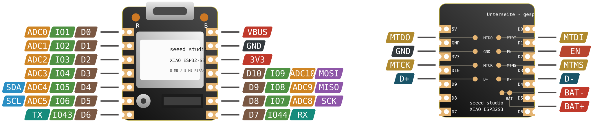

Seeed XIAO ESP32-S3

Die Falle, wenn man C3 und S3 nebeneinander hat. Beide XIAO haben dieselben Pads mit denselben Aufdrucken — aber andere GPIO-Nummern dahinter. D0 ist am C3 GPIO2, am S3 GPIO1. Code, der GPIO-Nummern hart verdrahtet, läuft auf dem falschen Board still auf den falschen Pins.
| Pad | XIAO C3 | XIAO S3 | Pad | XIAO C3 | XIAO S3 |
|---|---|---|---|---|---|
| D0 | GPIO2 | GPIO1 | D6 | GPIO21 | GPIO43 |
| D1 | GPIO3 | GPIO2 | D7 | GPIO20 | GPIO44 |
| D2 | GPIO4 | GPIO3 | D8 | GPIO8 | GPIO7 |
| D3 | GPIO5 | GPIO4 | D9 | GPIO9 | GPIO8 |
| D4 | GPIO6 | GPIO5 | D10 | GPIO10 | GPIO9 |
| D5 | GPIO7 | GPIO6 | Boot | GPIO9 (= D9) | GPIO0 (eigener Pad) |
Was der S3 kann, was der C3 nicht kann. USB-OTG, also echtes USB-HID — das Board meldet sich als Tastatur oder Maus am Rechner an. Dazu 8 MB PSRAM, Kamera- und LCD-Peripherie. Und der Boot-Taster sitzt auf einem eigenen Pad (GPIO0) statt auf D9, der damit frei bleibt.
GPIO21— User-LED, aktiv LOWGPIO0— Boot-TasterBAT+/BAT−— Akkupads auf der Unterseite, Laderegler an BordMTDO / MTDI / MTCK / MTMS— JTAG auf der UnterseiteLNA_IN— Umschaltung auf die u.FL-Antenne
Der IR-Mate-Aufsatz passt mechanisch, aber nicht per Nummer. Er sitzt auf denselben Pads — deine IR-MATE-Firmware müsste für den S3 also nach Pad-Bezeichnung umgeschrieben werden, nicht nach GPIO-Nummer: IR-Sender D1 wäre dort GPIO2 statt GPIO3, der Empfänger D2 GPIO3 statt GPIO4. Der Reset-Taster auf D9 verliert seine Doppelrolle, weil Boot beim S3 auf einem eigenen Pad liegt.